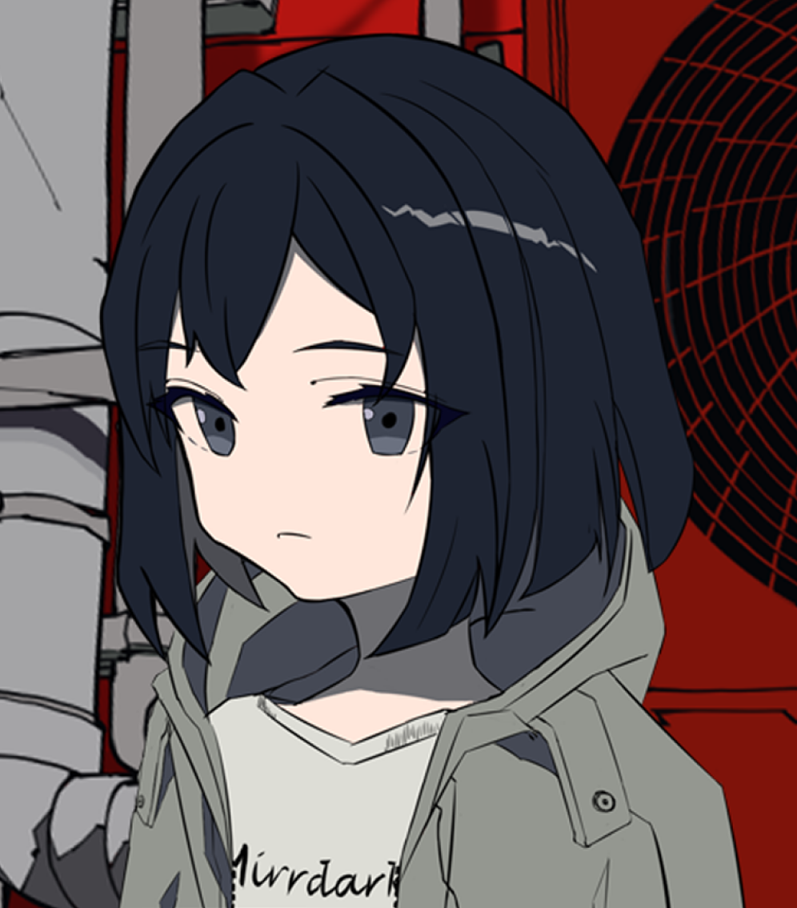

逃离互联网 2022-04-14 作者 MirrDark 188 字 本文最后编辑于 前，其中的内容可能需要更新。 起这么个标题党的名字，其实不是很好意思。 测试 顺便摆幅画，一个月前起了头像的稿，昨天突然兴起熬了个夜把衣服画上然后上了个色 不太好意思的是，其实为了能尽快画完，整个配色方案都直接复制了某个我喜欢的画师，所以这幅画不会传到这个网站以外的地方。 虽然不太可能，但如果画师本人摸到这个平台真的发现了这幅画，在这里说句非常抱歉。 絵をコピーして，大変申し訳ございません。  < 上一篇 下一篇 >